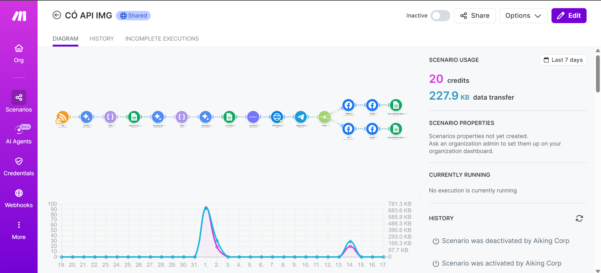
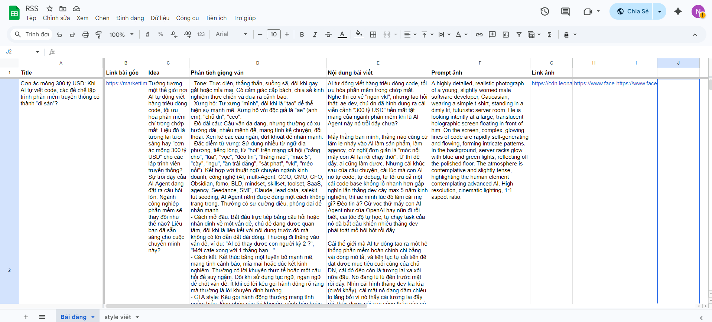
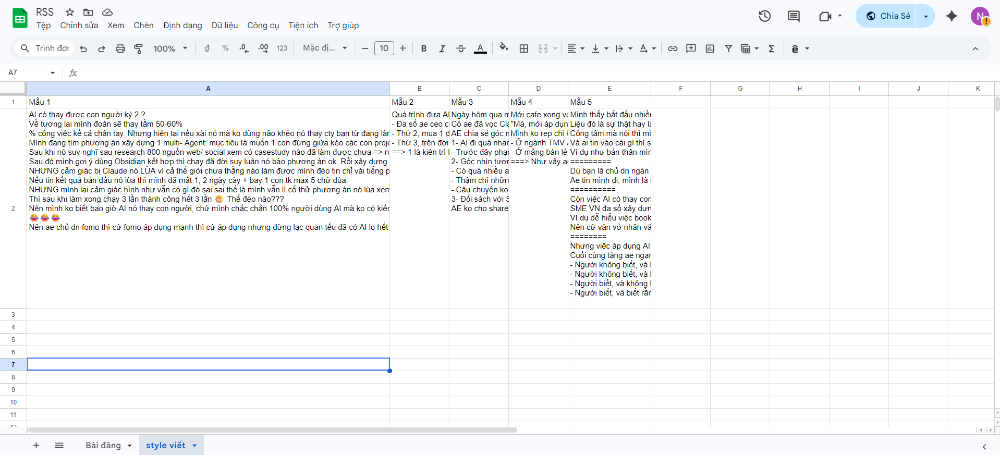
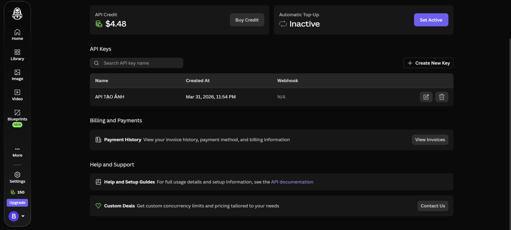
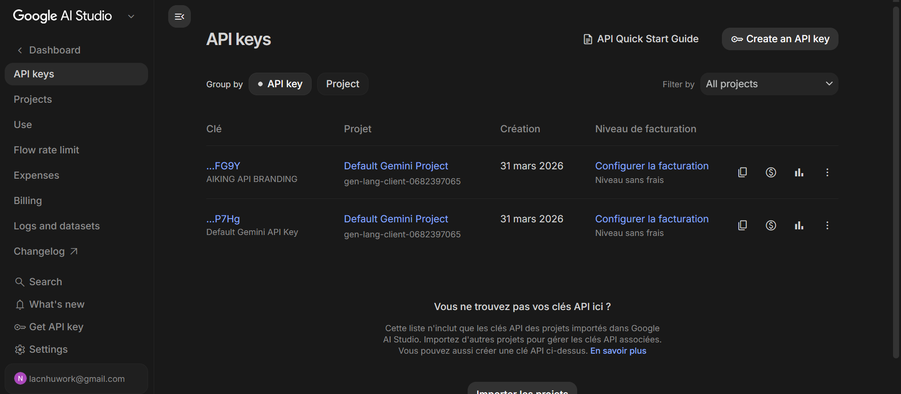
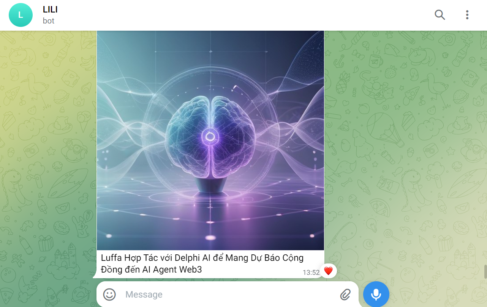
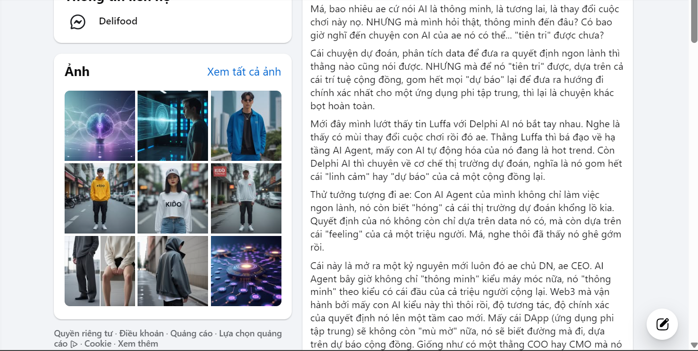

Tự động hóa Quy trình Marketing với Make.com & AI
Project cá nhân để tự tìm hiểu workflow automation. Xây dựng các kịch bản tự động hóa end-to-end cho quy trình Marketing: Quét tin tức RSS từ Internet → AI tự động lên ý tưởng, học giọng văn thương hiệu & viết caption → Sinh ảnh minh họa bằng Leonardo AI → Gửi duyệt qua Telegram Bot → Tự động hẹn giờ và đăng bài viết trực tiếp lên Fanpage Facebook.
Chi tiết Kịch bản & Quy trình Make.com

Tổng quan workflow trên Make.com
Cấu trúc luồng xử lý chính kết nối liên hoàn các nền tảng: Đọc dữ liệu nguồn tin mới qua RSS → Đưa qua Google AI Studio (Gemini API) xử lý ngôn ngữ → Gọi Leonardo AI tạo hình ảnh → Gửi preview duyệt bài tới Telegram Bot → Ghi thông tin vào Google Sheet → Đăng bài tự động lên Fanpage Facebook.

Quản lý các bài đã đăng
Bài viết hoàn chỉnh sẽ được tự động đăng lên Fanpage và trả về để lưu trữ/quản lý trong Google Sheets.

AI học giọng văn
Tổng hợp một số bài viết mẫu của con người để AI học giọng văn và ch ra output tự nhiên nhất.

Tự động Tạo Ảnh Minh họa Chất lượng cao bằng Leonardo AI API
Tích hợp API của Leonardo.Ai để biến ý tưởng bài viết thành các hình ảnh thiết kế độc đáo. Hệ thống tự động tối ưu hóa câu lệnh Prompt, chọn style nghệ thuật và xuất ảnh đúng kích thước chuẩn Facebook Post.

Lấy API Google
Lấy API tại Google AI Studio để hoàn thiện bước học giọng văn, phân tích đoạn văn, trả về caption, tự prompt ảnh.

Gửi Thông báo Preview trực tiếp qua Telegram Bot
Khi đăng công khai, Telegram Bot tự động gửi bản xem trước tới điện thoại của người quản lý.

Kết quả Bài viết Tự động Đăng hoàn chỉnh trên Fanpage
Bài viết hoàn chỉnh bao gồm nội dung chữ, hình ảnh sinh từ AI và tự động đăng lên Fanpage Facebook.